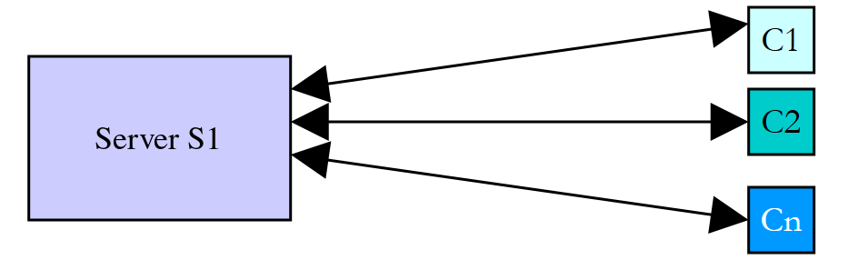
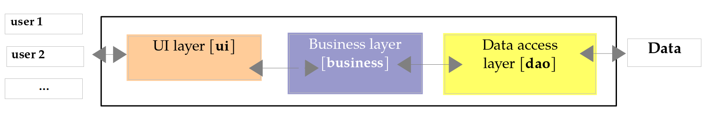
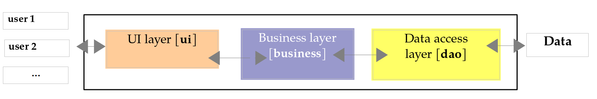

8. Execution Threads
This chapter introduces the simultaneous execution of multiple pieces of code within a single program: threads (execution threads) and the tools used to synchronize them. About twenty years ago, most machines had only one processor, and parallelism was largely an illusion maintained by the operating system. Today, even the most basic laptop has multiple cores: multiple threads actually run at the same time, making the synchronization issues discussed here even more prevalent.
Java has supported threads since its very first version (1996): the [Thread] class, the [synchronized] keyword, and the [wait] / [notify] methods of the [Object] class. Java 5 (2004) added the [java.util.concurrent] package and its subpackages [java.util.concurrent.locks] and [java.util.concurrent.atomic]: locks, semaphores, concurrent collections, thread pools, etc. Java 7 added the [Fork/Join] framework, Java 8 introduced parallel streams, and Java 21 introduced virtual threads, all of which have profoundly changed the way servers are written. Java 25 finally introduces scope-bound values ([ScopedValue]). We will explore all of these tools in this chapter.
The examples are compact source files ([java Threads01.java]) located in the [08-threads] folder. Remember that a compact source file automatically imports the entire [java.base] module: the classes in the packages [java.util.concurrent], [java.util.concurrent.locks], [java.util.concurrent.atomic], and [java.time] can therefore be used without the [import] directive.
A word of caution before you begin: the results of a multithreaded program vary from one run to the next. The order in which threads are assigned the processor depends on the operating system, the number of processors, and the machine’s load. The results shown in this chapter were obtained on a dual-processor Linux machine shared with other highly active programs. If you run the examples, you will get similar results, but they will rarely be identical. We will indicate in each case what is reproducible and what is not.
8.1. The Thread Class
When an application is launched, it runs in an execution flow called a thread. The Java class that models a thread is the [java.lang.Thread] class. Its main constructors and methods are as follows:
Member | Role |
[Thread(Runnable task)], [Thread(Runnable task, String name)] | Creates a thread that will execute the [run] method of [task]. [Runnable] is the functional interface for [void run()]: it is most often passed a lambda or a method reference |
[static Thread.Builder.OfPlatform ofPlatform()], [static Thread.Builder.OfVirtual ofVirtual()] | (Java 21) return a builder for platform threads or virtual threads, which you configure (name, daemon, etc.) before creating the thread |
[static Thread currentThread()] | the thread that executes the code that called this method |
[String getName()], [void setName(String name)] | the thread’s name, useful for tracking |
[long threadId()] | (Java 19) a unique numeric identifier for the thread; it replaces [getId()], which is deprecated |
[boolean isDaemon()], [void setDaemon(boolean b)] | Indicates (fixed) whether the thread is a daemon thread (see below) |
[int getPriority()], [void setPriority(int p)] | the thread's priority, from 1 ([MIN_PRIORITY]) to 10 ([MAX_PRIORITY]), with 5 ([NORM_PRIORITY]) as the default |
[Thread.State getState()], [boolean isAlive()] | the thread status ([NEW], [RUNNABLE], [BLOCKED], [WAITING], [TIMED_WAITING], [TERMINATED]); [isAlive] indicates whether it has been started but not completed |
[boolean isVirtual()] | (Java 21) indicates whether the thread is a virtual thread |
[void start()] | starts the thread's execution |
[void join()], [boolean join(Duration timeout)] | The thread T1, which executes [T2.join()], is blocked until the thread T2 has finished. The second form (Java 19) limits the wait time and indicates whether T2 has finished |
[static void sleep(long ms)], [static void sleep(Duration d)] | the thread executing the method is suspended for [ms] milliseconds (for the duration [d]). It loses the CPU, which is given to another thread |
[void interrupt()], [boolean isInterrupted()] | asks the thread to suspend; checks whether a suspension has been requested (see below) |
The methods [join] and [sleep] throw the checked exception [InterruptedException] if the thread is interrupted while waiting: the compiler requires that it be handled or declared. We will discuss its meaning in the section on interruptions.
The [Thread] class also has a method, [stop], which used to forcibly terminate a thread. It has been deprecated since Java 1.2, and since Java 20, it simply throws the [UnsupportedOperationException] exception: abruptly stopping a thread could leave the data it was handling in an inconsistent state. Today, we ask a thread to stop cooperatively by interrupting it: we’ll look at this a little later.
Here is an initial application demonstrating the existence of a main execution thread—the one that executes the [main] method. The [Threads01.java] program is as follows:
Results:
Comments:
- line 5: a reference to the thread executing the program is retrieved;
- lines 7–10: we display its name, modify it, and then display it again. Initially, the main thread is named [main] (line 2 of the results): the Java launcher assigned this name to it;
- Lines 12–18: Some properties of the thread. In this execution, the main thread has ID 3: the virtual machine creates a few threads for its own purposes before executing [main], and this ID may vary from one version of Java to another. It is neither a daemon thread ([isDaemon()] equals [false]) nor a virtual thread (we will discuss these two concepts later); its priority is the normal priority of 5; it is currently running ([RUNNABLE]). The thread’s [toString] method (line 17) displays its ID, name, priority, and the name of its thread group ([main]);
- line 18: the machine that ran the example has 2 processors;
- lines 21–26: a loop that displays output every second. [Thread.sleep(1000)] suspends the main thread for one second. Since [sleep] can throw the checked exception [InterruptedException], the method [main] declares it in its [throws] clause (line 3). Note the [HH:mm:ss] format (hours 0 through 23): the [hh] format would display hours 1 through 12.
8.2. Creating Execution Threads
It is possible to have applications where pieces of code execute “simultaneously” in different execution threads. If the machine has fewer processors than there are threads ready to execute, the threads share the processors: each one has access to a processor in turn for a short moment (a few milliseconds). On a multiprocessor machine, multiple threads actually execute at the same time. The amount of time allocated to a thread depends on various factors, including its priority, which has a default value but can be set programmatically ([setPriority]); this is merely a guideline, which the operating system is free to ignore (Linux ignores it by default). A thread that has access to the processor may release it early:
- by waiting for an event (completion of another thread using [join], waiting for a signal);
- by sleeping for a specified period of time ([sleep]).
A thread T is first created, for example, by the constructor [new Thread(task, name)], where [task] is an object that implements the functional interface [Runnable], whose only method is [void run()]. This object is most often a lambda or a method reference (functional interfaces were introduced in Chapter 7). In older code, you may also encounter classes derived from *[Thread]* that redefine its method *[run]*: this is not recommended, as it mixes the task to be performed with the means of executing it.
Creating a thread does not start it:
- the execution of thread T is started by [T.start()]: the [run] method of the task passed to T’s constructor will then be executed by thread T. The code that executes the [T.start()] instruction does not wait for thread T to finish: it immediately moves on to the next instruction. We now have two threads running in parallel. They often need to communicate with each other to track the progress of the shared work: this is the problem of thread synchronization;
- once started, thread T runs autonomously. It stops when the method it is executing is finished;
- we can wait for it to finish executing using [T.join()]. This is a blocking instruction: the thread executing it is blocked until thread T has finished its work. This is a basic method of synchronization.
The program [Threads02.java] is as follows:
Comments:
- line 5: we give the main thread a name;
- lines 8–14: 5 threads are created and started. Their references are stored in an array so they can be retrieved later. Each thread executes the [display] method in lines 21–30;
- Line 11: The method reference [this::display] is automatically converted to a [Runnable] object: the method [display] has no parameters and returns no result, just like [run]. We write [this::display] because, in a compact source file, methods declared outside any class are instance methods of the implicit class, whose name cannot be used in the code. The second parameter of the constructor is the thread name;
- line 13: thread #i is launched. This operation is non-blocking: thread #i runs in parallel with the main thread that launched it;
- line 17: the main thread reaches the end of the program;
- Lines 21–30: The [display] method displays the name and ID of the thread executing it, as well as the start and end times (to the millisecond) of execution;
- line 27: Any thread executing the [display] method pauses for 1 second. The processor is then handed over to another thread waiting for the processor. At the end of the 1-second pause, the paused thread becomes eligible for the processor again. It will obtain the processor when its turn comes;
- lines 33–40: the method [sleep] wraps [Thread.sleep]. The method [run] within [Runnable] does not declare any checked exceptions: therefore, the [display] method cannot let the [InterruptedException] exception thrown by [sleep] escape. The method [sleep] intercepts it and resets the thread’s interrupt flag (line 38); we’ll explain this action in the section on interrupts. We’ll encounter this small method in most of the programs in this chapter;
- lines 43–45: The method [time] returns the current time in the format [HH:mm:ss.SSS] ([SSS]: the milliseconds).
Results:
These results are very informative:
- First, we can see that launching a thread is non-blocking. The main thread launched 5 threads and reached the end of the program (line 6) even though thread 3 had not yet displayed its first message;
- the execution order of the threads is unpredictable: in this run, thread 4 displayed its start message before thread 0. The operating system has 6 threads and 2 processors here; it allocates the processors to these threads according to its own rules;
- We also note that the order of the displays does not always follow the order of the displayed times: the main thread displayed its end at 13.725, after messages dated from 13.727 to 13.732. The time is calculated before the output, and in the meantime, another thread may have written to the console. [IO.println] (like [System.out.println]) is thread-safe: two lines written by two threads do not get mixed up, but their order is not guaranteed;
- the IDs of the created threads (22 through 26) show that the virtual machine had already created about twenty threads for its own purposes (garbage collection, just-in-time compiler, etc.);
- each thread pauses for one second at [sleep], then completes execution of the [display] method;
- Finally, the program did not stop when the main thread finished its work: the virtual machine waited for all five threads to complete. This is because these threads are not daemon threads: the Java virtual machine stops when all its non-daemon threads have finished.
Conversely, a thread can be declared a daemon thread by [setDaemon(true)] before it is launched. Daemon threads are service threads that do not prevent the virtual machine from stopping: when the last non-daemon thread terminates, they are stopped. The program [Threads03.java] is as follows:
Comments:
- Line 8: Starting with Java 21, the [Thread.ofPlatform()] method returns a thread constructor of type [Thread.Builder], which is configured using chained calls: [daemon()] requests daemon threads; [name("", 0)] specifies that the threads be named with a prefix (in this case, the empty string) followed by a number that starts at 0 and increments by one for each thread created. Platform threads are the “classic” threads we’ve been using since the beginning of this chapter, as opposed to the virtual threads discussed later;
- line 12: the constructor’s method [start(Runnable)] creates a thread and starts it immediately. Its method [unstarted(Runnable)] creates a thread without starting it;
- line 16: the main thread waits 100 ms to give the threads time to start, then it terminates.
Results:
Three of the five threads began execution, then the main thread terminated (line 4). Thread 3 had calculated the time for its message before the main thread ended, but was only able to display it afterward (line 5), while the virtual machine was shutting down. The daemon threads were then terminated during their one-second sleep period: no end messages were displayed. Two threads did not even have time to display their start messages: since the machine was heavily loaded, 100 ms was not enough for them to acquire the CPU (another run will yield a different number of start messages, but never any end messages). The same effect is achieved by terminating [main] with [System.exit(0)], which shuts down the virtual machine—and thus all of the application’s threads, whether daemon threads or not. Virtual threads, which we will discuss later, are always daemon threads.
If the main thread wants to wait for the threads it has created to finish, it uses the [join] method. The [Threads04.java] program also demonstrates another way to specify the code a thread should execute: a lambda.
Comments:
- Line 13: The thread executes the lambda [() -> display(number, 1000 + 100 * number)]. A lambda with no parameters and no return value is compatible with the [Runnable] interface. This syntax allows calling a method with typed parameters (in this case, a [int] and a [long]), whereas [run] has none;
- Line 11: The lambda uses a copy of the loop variable [i]. This is mandatory: a lambda can only use local variables that are truly final, meaning they are never modified after initialization. The variable [i] is modified by the loop ([i++]): if the lambda used it, the compiler would reject the program (“local variables referenced from a lambda expression must be final or effectively final”). The variable [number], declared within the loop body, is, on the other hand, a new variable for each iteration and is never modified. This rule protects against a common pitfall: without it, a thread that starts late could read the value of [i] from a subsequent iteration, or even the final value 5;
- Lines 18–21: The main thread waits for each of the threads. It is first blocked while waiting for thread 0, then for thread 1, and so on. When it exits the loop, the 5 threads it launched have all finished. Since [join] can launch [InterruptedException], [main] throws this exception (line 3);
- line 31: task #i sleeps for 1,000 + 100 × i milliseconds, so that the threads terminate in a known order.
Results:
The start messages appear in any order, but the end messages appear in numerical order, since the sleep durations are increasing: this part of the result is reproducible. The last line shows that the main thread terminated after the threads it had launched, at the moment the last of them terminated.
8.3. Stopping a Thread: Interruption
How do you stop a thread before it finishes its work, for example, when the user cancels a long-running operation? Java does not allow you to kill a thread; instead, it provides a cooperative mechanism called interruption:
- Each thread has an interruption flag, a boolean initially set to [false];
- A thread T1 that wants to stop thread T2 calls [T2.interrupt()]. This sets the interruption flag of T2. This is a request to terminate: T2 is not terminated; it is up to that thread to decide when and how to terminate itself, so as to leave its data in a consistent state;
- if T2 is blocked in a waiting method ([sleep], [join], [wait], and most of the blocking methods in [java.util.concurrent]), it is woken up: the method throws the [InterruptedException] exception, and the interrupt flag is reset to [false];
- if T2 performs a calculation without ever waiting, it must check its own flag using [Thread.currentThread().isInterrupted()] at regular intervals.
This is why blocking methods declare the checked exception [InterruptedException]: the compiler requires the programmer to decide what to do with a stop request. There are two correct responses: let the exception propagate to the caller (by declaring it in the [throws] clause), or intercept it and cleanly complete the task. When neither option is possible, as in the [sleep] method of the previous program, the flag is reset using [Thread.currentThread().interrupt()] so that the calling code can still see the request. The only incorrect response is to ignore the exception. The program [Threads05.java] demonstrates all three cases:
Comments:
- Lines 5–18: The [sleeper] thread spends most of its time in [Thread.sleep]. The [while (true)] loop has no exit condition: it is the [InterruptedException] exception, thrown by [sleep] when the thread is interrupted, that causes the loop to exit (line 14). The lambda is an instruction [try] that encompasses the thread’s entire work: upon receiving the exception, the thread displays a message and then terminates;
- lines 20–27: the thread [calculator] never waits. It checks its interrupt flag on every loop iteration (line 23);
- Lines 29–38: The thread [deaf] intercepts [InterruptedException] and continues as if nothing had happened. The request to stop is lost: this is the mistake you must avoid. It is a daemon thread, so that the program can terminate without waiting for it;
- Line 41: The main thread lets the other threads run for one second;
- lines 43–45: it requests that the three threads terminate;
- lines 47–50: it waits for each thread to finish for at most one second. The method [join(Duration)] (Java 19) returns [true] if the thread has finished within that time, and [false] otherwise. [Duration.ofSeconds(1)] represents a duration of one second (class [java.time.Duration]).
Results:
The threads [sleeper] and [calculator] terminated a few milliseconds after the request; the thread [deaf] ignored the request and had still not finished one second later ([false], last line). The number of iterations of the calculator varies greatly from one run to the next, depending on the share of CPU time it received; the rest of the result is reproducible.
Interruption is the mechanism that halts the entire Java library: we will see later that the [cancel] method of a task ([Future]) and the abrupt termination of a thread pool ([shutdownNow]) interrupt the affected threads. The next chapter will present other ways to cancel asynchronous processing, such as timeouts.
8.4. Virtual threads
The threads we’ve created so far are platform threads: each one is a wrapper around an operating system thread, which it occupies for its entire lifetime. A system thread is a costly resource: creating it takes time, its stack reserves memory (on the order of a megabyte), and the system cannot efficiently manage more than a few thousand of them. However, a server that dedicates a thread to each client (see the diagram in the following paragraph) spends most of its time waiting: for a response from a database, for the client’s next request… During these waits, the system thread is blocked and unusable.
Java 21 introduced virtual threads (“virtual threads,” JEP 444). A virtual thread is an object [Thread] like any other, but it is managed by the Java Virtual Machine rather than by the operating system:
- To execute, a virtual thread is mounted on a platform thread, called its “carrier thread.” Carrier threads form a small pool, whose size defaults to the number of processors;
- when a virtual thread blocks ([sleep], waiting for network I/O, a lock, a blocking queue, etc.), it is unmounted: its stack is set aside in the virtual machine’s memory, and the carrier thread is immediately available for another virtual thread. When the wait ends, the virtual thread is reattached to a host thread—not necessarily the same one;
- a virtual thread takes up a few hundred bytes: millions can be created.
The program [Threads06.java] compares the launch of 10,000 platform threads and 10,000 virtual threads, each of which sleeps for one second:
Comments:
- lines 6–7: the method [measure] is called twice, first with a platform thread constructor ([Thread.ofPlatform()]) and then with a virtual thread constructor ([Thread.ofVirtual()]). Both constructors share the common type [Thread.Builder]: the rest of the code is identical;
- lines 20–31: the method [measure] launches [nbThreads] threads that sleep for one second, waits for them to finish, and displays the total duration. The method [System.nanoTime()] returns a time in nanoseconds, which is used only to measure durations;
- lines 10–14: A virtual thread named [virtual] displays its textual representation before and after a sleep;
- line 16: a virtual thread is always a daemon thread.
Results:
- 10,000 platform threads took several seconds to do what should have taken one second: creating the system threads and managing their stacks came at a high cost. With 100,000 threads, the program would likely fail due to a lack of memory or available system threads;
- 10,000 virtual threads completed the same task in just over one second: while dormant, they did not occupy any system threads. The exact times vary from one run to another, but the difference between the two types of threads is reproducible;
- The textual representation of a virtual thread ([VirtualThread[#…,virtual]]) indicates, after the character [@], the host thread on which it is mounted: a thread from the [ForkJoinPool-1] pool, which we will revisit later. After being suspended, the virtual thread can resume execution on another carrier.
Virtual threads do not make computations faster: a computation that keeps the processor busy without ever waiting does not run any faster in a virtual thread than in a platform thread, and the number of concurrent computations remains limited by the number of processors. Their benefit lies in the ability to dedicate, without counting the cost, a thread to each task that spends most of its time waiting: this is the case for servers, the following paragraph, and Chapters 12 and 13. Everything we will cover regarding thread synchronization applies equally to both virtual threads and platform threads.
8.5. Benefits of Threads
Now that we’ve highlighted the existence of a default thread—the one that executes the [main] method—and we know how to create others, let’s consider the benefits of threads. They have two main uses:
- to utilize all the machine’s processors for a time-consuming calculation: the work is divided into chunks assigned to different threads. We’ll do this using parallel streams and the [Fork/Join] framework at the end of this chapter;
- to perform multiple tasks simultaneously, particularly when some of them primarily involve waiting (for a network response, a disk read, or user input). This is the case with client/server Internet applications, which we’ll cover in Chapter 12.
In a client-server Internet application, a server located on a S1 machine responds to requests from clients located on remote machines C1, C2, …, Cn:

We use Internet applications that follow this pattern every day: web services, email, file transfers, etc. In the diagram above, the server S1 must serve clients Ci simultaneously. If we take the example of a file server, we know that a transfer can sometimes take several minutes. It is out of the question for a single client to monopolize the server for such a long period of time. A common solution is for the server to create as many execution threads as there are clients. Each thread is then responsible for handling a specific client:

With platform threads, the server effectively uses a thread pool—discussed later—whose limited number of threads caps the number of clients served simultaneously. With virtual threads, the scheme above once again becomes the correct solution: one virtual thread per client, even if there are tens of thousands of clients, since a client that is waiting does not occupy any system threads. This is what modern Java web servers, such as Tomcat—which we will use in Chapter 13—enable today.
8.6. Information Exchange Between Threads
In the previous examples, the threads executed a method without parameters, or a lambda that called a method with parameters. Since the method *[run]* of [Runnable] has neither parameters nor a return value, it is the lambda that passes information to the launched thread: it captures the variables it needs. If the captured variable refers to an object, the launched thread can also store results in it that the launching thread will read. The program [Threads07.java] is as follows:
Comments:
- lines 48–75: The information exchanged with each thread is a [Data] object. There is a two-way exchange of information between the launching thread and the launched thread. [start] and [duration] are fields of [final]: they are set once and for all by the constructor:
- [start]: the thread’s execution start time, set by the launching thread;
- [duration]: duration in seconds of the launched thread’s sleep, set by the launching thread;
- [end]: the thread’s end execution time, set by the launched thread;
- line 12: a [Data] object is created and stored in the [data] array (line 13);
- line 15: the lambda [() -> sleep(d)] captures the variable [d], which is effectively final: the launched thread will execute the method [sleep] in lines 36–45 with the object [d] as a parameter;
- lines 21–30: the main thread waits for each of the threads it has launched to finish, then retrieves the object [data[i]] from thread #i and displays its contents. The actual duration is calculated by [Duration.between(d.getStart(), d.getEnd())];
- line 39: the [duration] field of the parameter sets the sleep duration;
- line 44: the [end] field of the parameter is populated.
Results:
This example shows that two threads can exchange information:
- the calling thread can control the execution of the called thread by providing it with information;
- the launched thread can return results to the launching thread.
In order for the calling thread to know when the results it is waiting for are available, it must be notified when the called thread has finished. Here, it waited for the thread to finish using the [join] method. This isn’t just a matter of timing: as we’ll see in the section on the [volatile] keyword, a write operation performed by one thread isn’t necessarily visible to another. Java’s memory model guarantees that everything written by a thread is visible to the thread that waited for it to finish using [join], and that everything written by the launching thread before [start] is visible to the launched thread. We’ll explore other ways to synchronize later on.
Instead of a lambda, we could write a class that implements [Runnable] and whose fields contain the exchanged information. The lambda is more concise; it is the most common approach today. To retrieve the result of a processing operation, we’ll also look at the [Callable<V>] interface later on, whose [V call()] method returns a result.
8.7. Concurrent Access to Shared Resources
8.7.1. Unsynchronized concurrent access
In the previous section, information was exchanged only between two threads and at very specific times: this was a classic example of parameter passing. There are other cases where information is shared by multiple threads that may want to read or update it at the same time. This raises the issue of the integrity of this information. Suppose the shared information is a structure S containing various pieces of information I1, I2, …, In:
- a thread T1 begins updating structure S: it modifies field I1 and is interrupted before completing the full update of structure S;
- a thread T2 that acquires the processor then reads structure S to make decisions. It reads a structure in an unstable state: some fields are up to date, others are not.
This situation is called concurrent access to a shared resource—in this case, structure S. It is often difficult to manage. Let’s consider the following example to illustrate the problems that can arise:
- an application will generate n threads, where n is passed as a parameter;
- the shared resource is a counter that must be incremented by each generated thread;
- at the end of the application, the counter’s value is displayed. It should therefore equal n.
The program [Threads08.java] is as follows:
Comments:
- Lines 5–11: The number of threads is passed as an argument. The method [integer] (lines 28–34) returns the integer contained in a string, or -1 if the string contains none; the condition on line 7 therefore rejects both a missing or invalid argument and a number outside the range [1, 100]. In the event of an error, the program writes a message to the error output ([System.err]) and terminates with exit code 1 ([System.exit(1)]);
- line 16: Each thread executes the static method [increment] of the class [Counter]. The method reference [Counter::increment] is valid here because [Counter] is a named class;
- lines 37–58: the shared resource is the static field [value] of the class [Counter]. The counter is encapsulated in a static nested class, with the method [increment] executed by each thread;
- line 49: the counter is read;
- line 52: the thread pauses for 1 second. It therefore loses the CPU;
- line 54: the counter is incremented.
The one-second pause is only there to force the thread to lose the CPU between reading and writing the counter. In practice, there is no guarantee that a thread will not be interrupted between these two moments, and on a multiprocessor machine, two threads may even read the counter at exactly the same time. The one-second pause merely systematizes this risk.
Program arguments are placed after the source file name. Without arguments, an error message is displayed (the Linux shell command ***[echo $?]*** displays the exit code of the last program executed):
With 5 threads:
Looking at these results, it’s clear what’s happening:
- A first thread reads the counter. It finds 0. It pauses for 1 second and thus loses the CPU;
- a second thread also reads the counter value. It is still 0 since the previous thread has not yet incremented it. It also pauses for 1 second;
- in less than a second, all 5 threads have time to read the value 0;
- when they wake up, they increment the value 0 they read and all write the value 1 to the counter, as confirmed by the last line (line 12). This incorrect result is reproducible: only the order of the threads changes from one execution to the next.
One might object that the example is artificial. So let’s remove the sleep and use the operator [++], which gives the illusion of a single instruction. The program [Threads09.java] is as follows:
Comments:
- lines 5–6: The number of threads (4 by default) and the number of increments performed by each thread (50 million by default) can be passed as arguments. The separator [_] makes the constant [50_000_000] readable;
- line 14: The threads are created and launched by [Thread.ofPlatform().start(…)]; they do not need names;
- Line 17: Each thread increments the shared counter without pausing;
- line 27: In the format string, [%,d] displays an integer using the thousands separator for the current language (in this case, English: a comma). The instance method [formatted(…)] (Java 15) for a string is equivalent to [String.format(string, …)].
Results:
Tens of millions of updates were lost, and the number varies from one test to another. The high-level operation [Counter.value++] is in fact translated into several basic processor instructions: read the value from memory, increment it in a register, and write the result to memory. If two threads read the same value before one of them has written its own, an increment is lost, exactly as in the previous example.
Test 3 warrants an explanation: it lost almost exactly 150 million updates, representing the work of three out of four threads. After a few seconds of execution, the virtual machine’s just-in-time compiler (JIT) optimized the loop in lines 15–18: it determined that no other thread was supposed to see the counter during the loop (nothing in the code requires it to) and placed the counter in a processor register. Each thread then reads the counter once, adds 50 million to it in its register, and writes it back once at the end. If all four threads read the value 0 before any of them has written to it, three out of four results are lost; if, on the other hand, their work does not overlap, the result is correct. In other runs of this program, tests 2 and 3 actually yielded the exact value of 200,000,000. Only the first test, run before this optimization, consistently loses updates. This is what makes these errors so dangerous: a program can run for months and then fail on the very day the machine is under heavier load or running faster.
Where does the problem come from? One thread read an outdated value because another thread had been interrupted—or was working simultaneously on another processor—before it had finished its task of updating the counter. This brings us to the concepts of critical resources and critical sections in a program:
- a critical resource is a resource that can be held by only one thread at a time. Here, the critical resource is the counter;
- a critical section of a program is a sequence of instructions in a thread’s execution flow during which it accesses a critical resource. We must ensure that, during this critical section, the thread is the only one with access to the resource.
In the program [Threads08.java], the critical section is the code between reading the counter and writing its new value:
To execute this code, a thread must be guaranteed to be the only one running. It may be interrupted, but during that interruption, no other thread must be able to execute this same code. Java offers various tools to ensure single-threaded entry into critical sections of code. We’ll look at a few of them now.
8.7.2. The synchronized keyword
The block [synchronized] delimits a critical section as follows: [synchronized (lock) { …critical section… }]***. [lock]* is an object visible to all threads executing the critical section. In Java, every object has an internal lock, also known as a monitor. The block [synchronized] ensures that only one thread at a time holds the monitor of the object [lock], meaning that only one thread at a time executes the critical section: a thread that encounters a monitor held by another thread is blocked until the monitor is released. The monitor is released upon exiting the block, whether the exit is normal or due to an exception.
The previous example is rewritten as follows in [Threads10.java]:
Comments:
- line 45: [lock] is the object that will enable synchronization of all threads. It serves no other purpose: it is a simple [Object]. It is [final]: the reference must never change, otherwise two threads could lock two different objects;
- lines 59–69: The critical section of the [increment] method is enclosed by the [synchronized] block. The thread holds the lock while it sleeps for one second: the other threads cannot enter;
- lines 47–51: The main thread’s read of the counter is also protected by the lock. Here, this isn’t strictly necessary, since the main thread waited for the other threads to finish with [join]; but it’s good practice: data protected by a lock must be read and written under the protection of that lock;
- Lines 20–26: The main thread waits for the threads in the reverse order of their creation.
Results with 3 threads:
- All three threads request to enter the critical section at nearly the same time;
- only one enters it—in this case, thread 2 (the order of entry is not guaranteed: it is not necessarily the first to arrive that enters first). It reads the counter, sleeps for one second, writes the new value, and exits the critical section;
- the other two threads are blocked until the first one exits the critical section, then proceed one after the other. Each reads the value written by the previous one. Note (lines 8–9) that Thread 1 read the counter before Thread 2 indicated that it had exited the critical section: Thread 2 did indeed release the lock, but it does not display its message until after the block [synchronized], and Thread 1 was faster;
- the main thread was waiting for Thread 2 to finish. When notified that Thread 2 had finished, it waited for Thread 1 to finish, then for Thread 0 to finish;
- The number of threads is correct (line 20). Regardless of the order in which the threads run, this result is reproducible.
The keyword [synchronized] can also apply to an entire method: [synchronized void m() {…}] is equivalent to a block [synchronized (this) {…}] that encompasses the entire body of the method, and [static synchronized void m() {…}] to a block [synchronized (Counter.class) {…}], which locks the class object [Class]. This is the shortest notation, and it is commonly used. However, it has one drawback: the locked object ([this], or the [Class] object) is visible from the outside, and external code can acquire the same lock and block ours. Therefore, it is often preferable to lock a private object, as in the example. For the same reason, we never lock a string (identical string literals are a single object shared by the entire program) or, since Java 16, an object of a “value-based” class such as [Integer] or [LocalDate] (the compiler issues a warning for this).
A thread that already holds a monitor can re-enter a [synchronized] block on the same object without blocking itself: the lock is said to be reentrant. A [synchronized] method can thus call another [synchronized] method on the same object.
8.7.3. The ReentrantLock class
The [synchronized] lock is simple but rigid: a thread waiting on a monitor waits indefinitely, without being able to give up after a certain amount of time, and without being able to be interrupted. The [java.util.concurrent.locks.ReentrantLock] class (Java 5) is an explicit lock—which is also reentrant—that offers these capabilities. It implements the [Lock] interface. We will use the following constructors and methods:
Member | Role |
[ReentrantLock()], [ReentrantLock(boolean fair)] | creates a lock. A fair lock ([true]) is granted to threads in the order in which they requested it; a non-fair lock (the default) is faster, but a thread may cut in front of others |
[void lock()] | The thread T1, which is executing [V.lock()], requests lock V. If V is not held by any thread, it is granted to T1. If a thread T2 then performs the same operation, it is blocked: a lock can belong to only one thread. T2 will be unblocked when T1 releases V. Thus, multiple threads may be blocked while waiting for V |
[boolean tryLock()], [boolean tryLock(long timeout, TimeUnit unit)] | requests the lock immediately, or while waiting for at most [timeout]. The method returns [false] if the lock could not be obtained |
[void lockInterruptibly()] | like [lock], but the wait can be interrupted ([InterruptedException]) |
[void unlock()] | The thread holding V releases it. One of the threads waiting for V then acquires it |
[boolean isHeldByCurrentThread()] | indicates whether the current thread holds the lock |
[Condition newCondition()] | creates a condition associated with the lock (see below) |
Synchronization of a critical section always follows the same pattern: [V.lock(); try { …critical section… } finally { V.unlock(); }]. Do not forget to release the lock; otherwise, the threads waiting for it will remain blocked indefinitely: this is why the lock is released in a [finally] clause, which is executed regardless of whether an exception occurred or not. The [synchronized] block does this automatically; with a [ReentrantLock], it is up to the programmer to do so. The [Threads11.java] program continues the previous example with a [ReentrantLock]:
The main program is that of [Threads08.java]. Comments:
- line 41: the thread synchronization object is now a fair lock, [ReentrantLock];
- line 58: start of the critical section. The thread is blocked until the lock is released;
- lines 59–73: Because a lock must always be released, regardless of whether an exception occurs, the critical section is placed within a [try], whose [finally] clause releases the lock (line 72);
- Lines 43–50: The same pattern protects the counter reading. The [return value;] statement is executed before the [finally] clause: the returned value is read while the lock is held.
Results:
The results are similar to the previous ones: the threads enter the critical section one by one, and the final counter value is correct. Since the lock is fair, the threads acquired it in the order in which they requested it: the order of their calls to [lock], which the “waiting for permission” message timestamps—calculated a little earlier—only approximate.
When should you use [ReentrantLock] instead of [synchronized]? When you need one of its additional features: timeout ([tryLock], which we’ll use to prevent deadlock), interruptible wait, fairness, or multiple conditions. Otherwise, the [synchronized] block—which is simpler and eliminates the risk of forgetting [unlock]—works very well. Since Java 24, it no longer causes any issues with virtual threads: previously, a virtual thread blocked in a [synchronized] block could not release its host thread, which made [ReentrantLock] the preferred choice.
8.7.4. Synchronizing Processes: The File Lock
The locks described above synchronize threads within the same virtual machine—that is, within the same process. Sometimes different processes need to share a resource, such as a file, or you may want to prevent two instances of the same application from being launched. Java does not provide a named synchronization object shared across processes; instead, a file lock managed by the operating system is used: the [java.nio.channels.FileLock] class. A lock is obtained on an open file in the form of a [FileChannel] channel:
- [FileLock lock()]: waits for the lock to become available and acquires it;
- [FileLock tryLock()]: attempts to acquire the lock without waiting, and returns [null] if it is held by another process;
- [void release()]: releases the lock. The lock is also released when the channel is closed or when the process ends, even if terminated abruptly: a lock cannot remain “abandoned.”
The program [Threads12.java] is launched twice, in two different processes, which share a critical section:
Comments:
- line 5: the file that serves as the lock. All processes that lock this file synchronize with one another. It is placed in the system’s temporary files folder, specified by the system property [java.io.tmpdir] ([/tmp] on Linux). Its contents are irrelevant: it can remain empty;
- line 10: the file is opened for writing (an exclusive lock requires this), and created if it does not yet exist ([CREATE]). The [try] statement with the resource will close the channel at the end;
- line 13: the process attempts to acquire the lock without waiting. If it fails, it reports the failure and then waits for the lock indefinitely (line 17);
- Lines 19–26: the critical section, which lasts 3 seconds, followed by the release of the lock.
A file lock belongs to the entire process, not to a single thread: it is not used to synchronize threads within the same process (two lock requests on the same file within the same process cause the [OverlappingFileLockException] exception). We start process A, wait 1.5 seconds, then start process B in a second terminal. Results from Process A:
Results from Process B:
Process B encountered the lock held by process A and waited. It acquired the lock the very moment A released it. A common use of this mechanism is to prevent the launch of two instances of the same application: the second instance, unable to acquire the lock with [tryLock], terminates immediately.
8.7.5. A barrier: the Semaphore class
A semaphore is a counter for permits (or slots). The [java.util.concurrent.Semaphore] class provides the following methods:
Member | Role |
[Semaphore(int permits)], [Semaphore(int permits, boolean fair)] | creates a semaphore with [permits] permits; the second parameter has the same meaning as for [ReentrantLock] |
[void acquire()] | acquires a permit. If there are no permits left, the thread is blocked until a permit is released. The wait can be interrupted ([InterruptedException]) |
[void acquireUninterruptibly()] | same as above, but the wait cannot be interrupted |
[boolean tryAcquire()], [boolean tryAcquire(long timeout, TimeUnit unit)] | Obtains a license immediately, or within at most [timeout]; returns [false] if the attempt fails |
[void release()] | returns (adds) a permit; one of the waiting threads can then take it |
[int availablePermits()] | the number of available permits |
Unlike a lock, a permit does not belong to any specific thread: any thread can call [release], even if it has never acquired a permit. A semaphore created with zero permits is therefore a closed barrier, at which threads calling [acquire] are blocked. Another thread will open it when the time comes, by calling [release]. This timing depends entirely on the problem being solved. The thread that acquired the single permit passed through the barrier, which closed behind it; by returning the permit, it opens the barrier for another thread. If, in the previous example, we replace the lock with such a barrier, the code becomes the following ([Threads13.java]):
Comments:
- line 47: the barrier is created in a closed state. It will be opened by the main thread on line 24;
- line 20: the main thread waits half a second to allow the threads to arrive at the barrier;
- line 59: the thread responsible for incrementing the counter requests permission to enter the critical section. The various threads accumulate in front of the closed barrier. When the main thread opens it, one of the waiting threads passes through, and the barrier closes again. The method [acquireUninterruptibly] avoids having to handle the exception [InterruptedException] here;
- line 73: when it has finished its work, the thread reopens the barrier, allowing another thread to enter.
Results:
The results are similar to the previous ones. We can see that the three threads wait at the barrier until the main thread opens it (line 5).
8.7.6. The CountDownLatch and Semaphore classes
Two additional uses of synchronization tools complement the previous examples.
A [java.util.concurrent.CountDownLatch] object is a counter: it is created with an initial value N; each call to its [countDown] method decrements it; its [await] method blocks the calling thread until the counter reaches 0. Once it reaches 0, it remains there: the barrier is permanently open and allows all threads to pass. With N = 1, this serves as the “starting signal” for a race; with N = the number of jobs, it is a way to wait for the completion of N jobs, each of which calls [countDown] when it finishes. The program [Threads14.java] is as follows:
Comments:
- line 5: the countdown starts at 1: the gate is closed;
- line 15: each thread waits for the countdown to reach 0. The [await] method can call [InterruptedException]; if the thread is interrupted while waiting, it drops out of the race (line 18);
- line 27: the main thread decrements the countdown by one after one second; it becomes 0;
- line 32: the [getCount] method returns the current value of the countdown.
Results:
The four runners started together, within a few milliseconds of each other, after the starting signal. A [CountDownLatch] is used only once; the [CyclicBarrier] class provides a reusable rendezvous point (the N threads wait for each other, then set off together), and the [Phaser] class generalizes these two tools.
Let’s return to the semaphore in its most common use: an N-permit semaphore allows at most N threads to enter a code section at a time. This is useful for limiting access to a resource available in limited quantities (database connections, concurrent requests to a server, etc.). The program [Threads15.java] is as follows:
Comments:
- line 5: the semaphore has 2 permits: 2 slots;
- line 14: a thread requests a slot. If one is available, it takes it and continues; otherwise, it is blocked until a slot becomes available;
- line 17: the number of slots still available;
- line 23: the thread returns its slot, in a [finally] clause.
Results:
All five threads request a slot; two obtain one immediately, while the other three wait. Each time a thread releases its slot, a waiting thread obtains it. There are never more than two threads in the code section. A single-permit semaphore acts as a lock, as in the program [Threads13.java]. With virtual threads, the semaphore is the natural tool for limiting concurrency: rather than limiting the number of threads, a virtual thread is created for each task, and a semaphore is used to limit the number of tasks simultaneously using the scarce resource.
8.7.7. Write Visibility: The volatile Keyword
Locks aren't just used to make a group of operations indivisible. They address a second, more insidious problem: the visibility of writes. To speed things up, the processor stores values in its registers and caches, and the compiler reorders or eliminates reads and writes on the fly, as we saw with the program [Threads09.java]. As a result, a value written by one thread may not be seen by another thread until later—or perhaps never at all.
The Java Memory Model precisely defines when a write is guaranteed to be visible: when there is a “happens-before” relationship between the write and the read. The main ones are as follows:
- everything a thread has done before releasing a lock (end of a block [synchronized], [unlock]) is visible to the thread that subsequently acquires that lock;
- what the calling thread did before [start] is visible to the called thread; what a thread did is visible to the thread that waited for it to finish via [join];
- a write to a field [volatile] is visible to any subsequent read of that field;
- the tools in [java.util.concurrent] provide similar guarantees: what a thread did before [release()], [countDown()], or the insertion of an element into a concurrent collection, is visible to the thread that subsequently executes [acquire()], [await()], or removes the element.
When none of these relationships exist, the program is said to contain a “data race,” and there are no guarantees. The program [Threads16.java] illustrates this with a common scenario: a flag that instructs a thread to stop.
Comments:
- lines 5–11: The thread T1 runs as long as the ordinary field [Flags.stop] is equal to [false];
- lines 13–19: The thread T2 does the same with the fields [volatile] and [Flags.volatileStop];
- lines 24–25: After one second, the main thread passes both flags to [true];
- lines 27–30: it waits for each of the two threads for no more than 2 seconds. Both threads are daemons, so that the program can terminate even if one of them is still running;
- lines 34–39: the two flags. The keyword [volatile] (line 38) specifies that any read operation on the field must read from memory, and that any write operation must be performed immediately.
Results:
The thread T2 saw the stop request immediately. The thread T1, however, never saw it: it was still running two seconds later and only stopped when the virtual machine shut down. The just-in-time compiler, noting that the loop in lines 7–9 does not modify [stop] and that no synchronization requires it to be re-read, read this field only once, before the loop: the loop thus became an infinite loop. This behavior is reproducible with the HotSpot virtual machine used here, but it is not guaranteed: another virtual machine, or another version, might allow T1 to stop. That is precisely the problem: without an happens-before relationship, the program’s behavior is undefined.
The keyword [volatile] guarantees visibility, but not atomicity: [value++] on a field [volatile] remains a read followed by a write, and two threads can still lose an update. [volatile] is therefore suitable for a flag written by one thread and read by others, but not for a shared counter. To stop a thread, the interruption described above is actually preferable to a flag: it also wakes up a thread that is blocked in a wait.
8.7.8. Atomic Classes
The [java.util.concurrent.atomic] package (Java 5) provides classes that make simple operations on a variable atomic: the operation is executed entirely by the thread, without any other thread being able to observe or modify the variable in the middle of the operation. The previous tools ([synchronized], [ReentrantLock], [Semaphore]) are all designed to make a group of operations atomic, at the cost of blocking other threads. For simple but frequent operations, atomic classes avoid this blocking by using special processor instructions. The main methods of the [AtomicInteger] class are as follows:
Method | Role |
[int get()], [void set(int v)] | Reads and writes the value (using the semantics of a [volatile] field) |
[int incrementAndGet()], [int decrementAndGet()] | increments (decrements) the value by 1 and returns the new value |
[int getAndIncrement()], [int getAndDecrement()] | same as above, but returns the previous value (such as [x++] and [x--]) |
[int addAndGet(int delta)] | adds [delta] to the value and returns the new value |
[int getAndSet(int v)] | assigns [v] and returns the old value |
[boolean compareAndSet(int expectedValue, int newValue)] | assigns [newValue] only if the value is [expectedValue]; returns [true] if the assignment took place |
[int updateAndGet(IntUnaryOperator f)] | replaces the value v with f(v) atomically and returns the new value |
The package also offers [AtomicLong], [AtomicBoolean], [AtomicReference<V>] (an atomic reference to an object), and atomic arrays ([AtomicIntegerArray]…). The [LongAdder] class (Java 8) is a counter designed for very frequent updates by many threads: instead of a single variable that all threads compete for, it distributes the increments across multiple cells, which are only added together when the sum is requested ([sum]).
The program [Threads17.java] builds on the experiment from the program [Threads09.java] and compares five ways to increment the shared counter:
Comments:
- lines 4–5: In a compact source file, fields can be declared outside any class; these are fields of the implicit class. They are used by the instance methods [main] and [measure];
- lines 14–18: The method [measure] is called with five different increment methods, passed as [Runnable], and with a function that returns the resulting value, of type [LongSupplier] (a functional interface of type [long getAsLong()]). The method references [Counter.atomic::get] and [Counter.adder::sum] refer to methods of two specific objects;
- lines 22–47: The method [measure] launches [nbThreads] threads, each of which calls the received method [nbIncrements] times, and measures the total time. The format [%,12d] right-aligns the value to 12 characters, with a thousands separator;
- lines 25, 30, and 41: the threads all wait behind a [CountDownLatch], which is opened once they are all launched. They thus begin their work at the same time, making concurrent accesses much more likely than with threads launched one after another;
- line 52: the counter is [volatile]. This prevents the compiler from performing on-the-fly the optimization we observed with [Threads09.java]: each increment actually reads from and writes to memory;
- line 67: the unsynchronized increment;
- lines 72–74 and 79–84: the increment within a critical section protected by [synchronized] or by a [ReentrantLock];
- line 89: atomic increment;
- line 94: incrementing a [LongAdder].
Results:
- Without synchronization, the result is incorrect once again: the [volatile] field did not make [value++] atomic;
- the other four methods return the correct result;
- Atomic classes are significantly faster than locks in this execution. Locks are costly here because four threads are constantly competing for them over a tiny operation. The measured execution times depend heavily on the machine and its load: only their order of magnitude is significant. [LongAdder] was the fastest: its threads interfere with each other less than those competing for the single variable in a [AtomicInteger], and its performance advantage increases with the number of processors.
The [compareAndSet] method (“CAS”) is the building block of “lock-free” algorithms: we read the value, calculate the new one, and then write it only if the variable has not changed in the meantime; otherwise, we start over. This is what [updateAndGet] does, and the concurrent collections presented later make extensive use of it.
8.8. Concurrent Access to Multiple Shared Resources
8.8.1. Deadlock
In our previous examples, a single resource was shared among the different threads. The situation becomes more complicated if there are multiple resources and they are dependent on one another. In particular, a deadlock can occur: two threads are waiting for each other. Consider the following actions, which occur sequentially:
- a thread T1 acquires the lock V1 to access a shared resource R1;
- a thread T2 acquires the lock V2 to access a shared resource R2;
- Thread T1 requests lock V2. It is blocked;
- the thread T2 requests the lock V1. It is blocked.
The threads T1 and T2 are waiting for each other indefinitely. Several solutions are possible:
- request both resources at the same time using a single lock. This isn’t always possible if it results in a long lock on a costly resource;
- always acquire locks in the same order: if all threads acquire V1 before V2, deadlock is impossible. This is the most commonly used rule;
- A thread holding V1 that cannot acquire V2 releases V1 to avoid deadlock.
The program [Threads18.java] causes a deadlock and implements the last solution, using the method [tryLock] of [ReentrantLock]:
Comments:
- lines 5–6: the locks on the two resources. These are local variables here, captured by the lambdas on lines 9 and 11;
- Line 9: The thread T1 acquires R1 and then requests R2; it waits for a maximum of 2 seconds;
- line 11: the thread T2 acquires R2 and then requests R1—that is, in reverse order; it waits for at most 5 seconds;
- line 20: the method [work] acquires locks of the type defined by the interface [Lock], which is implemented by [ReentrantLock];
- line 22: the thread acquires its first resource. The [finally] clause on line 42 will release it in any case;
- line 26: it waits for half a second, which gives the other thread time to acquire its own first resource: deadlock is then certain;
- line 29: instead of a [lock], which would wait indefinitely, the thread requests the second lock with a maximum wait time. [tryLock] returns [true] if the lock was obtained, and [false] if the timeout expired. The timeout is expressed as a number and a unit ([TimeUnit.MILLISECONDS]); the method [toMillis()] converts the duration [timeout] to milliseconds;
- line 34: a lock acquired by [tryLock] must be released by [unlock], within a [finally] clause;
- lines 36–39: if the second lock could not be acquired, the thread aborts. Upon exiting the method, it releases its first resource (line 43);
- lines 40–41: [sleep] and [tryLock], with a timeout, can launch [InterruptedException].
Results:
Each of the two threads obtained its first resource and then requested the second: they are deadlocked. After 2 seconds, T1 gives up and releases R1; T2, which was still waiting, immediately obtains R1 and can do its work. Without a timeout, the program would never have finished. This sequence of events is reproducible; only the order of lines 2 and 3 and that of lines 4 and 5 can change. It would not be possible to write this program using [synchronized] blocks, since their wait time cannot be limited.
When a Java program appears to be frozen, the [jcmd <pid> Thread.print] command from JDK displays the call stack for each of its threads ([pid] is the process ID, which is returned by the [jcmd] command without any parameters); it detects deadlocks between locks and reports them with the message “Found one Java-level deadlock,” followed by the threads and locks involved.
8.8.2. An example: readers and writers
Consider the following example:
- we have an array into which some threads write data (the writers) and others read it (the readers);
- the writers are equal to one another but exclusive: only one writer at a time can write data to the array;
- readers are equal to one another but exclusive: only one reader at a time can read the data stored in the array;
- a reader can only read data from the array when a writer has placed some there, and a writer can only place new data in the array when the data already there has been read by a reader.
There are two types of shared resources:
- the writable table: only one writer at a time may access it;
- the read-only table: only one reader at a time may access it.
and an order for using these resources:
- a reader must always follow a writer;
- a writer must always follow a reader, except the first time.
Access to these two resources can be controlled using two barriers of type [Semaphore]:
- The [canWrite] barrier controls writers’ access to the array;
- the barrier [canRead] controls readers’ access to the array;
- the [canWrite] barrier is created open (one permit), allowing the first writer to pass and blocking all others;
- The [canRead] barrier is created in the closed state (no permission), blocking all readers;
- When a writer has finished their work, they open barrier [canRead] to let a reader in;
- when a reader has finished their work, they open the barrier [canWrite] to let a writer in.
Here we see the benefit of a barrier that does not belong to any thread: the barrier [canRead] is closed by a reader (who takes the permit) and opened by a writer (who returns it). This is impossible with a lock, which can only be released by the thread that holds it. The program [Threads19.java] illustrating this synchronization is as follows:
Comments:
- lines 8–14: creation and launch of two reader threads, followed by two writer threads. No references are kept to the threads: the main thread does not wait for them;
- line 16: the main thread terminates immediately. The process continues until all four threads—which are not daemons—have finished;
- line 22: the array [data] is the shared resource between the reader and writer threads;
- line 24: The barrier [canRead] signals to the readers that they can read the array. It is opened by the writer who has filled the array. It is created in a closed state: a writer must first fill the array;
- line 26: The barrier [canWrite] notifies writers that they can write to the array. It is opened by the reader who has read the entire array. It is created open: the array is writable from the start;
- line 33: a reader waits for a writer to signal that the array has been filled. When this signal arrives, only one of the waiting readers proceeds;
- lines 35–39: the array is read, with a half-second pause at each element to force the thread to yield the CPU;
- line 41: the reader notifies the writers that the array has been read and can be filled again;
- the method [write] is symmetric to the method [read];
- line 56: the written numbers are randomly generated. The [ThreadLocalRandom.current()] method (Java 7) returns a random number generator specific to the current thread: threads do not compete for a single generator. The [nextInt(0, 1000)] method returns an integer from the interval [0, 1000[;
- the array [data] is not protected by any lock. However, there is no data race: the writer’s writes precede its [canRead.release()], which precedes (happens-before relation) the reader’s [canRead.acquireUninterruptibly()], and thus its reads.
Results:
The following points can be noted:
- there is only one reader at a time, although it loses the CPU in the critical section [read];
- there is only one writer at a time, although it loses the processor in the critical section [write];
- a reader reads only when there is something to read in the array;
- a writer writes only when the array has been fully read;
- On the other hand, we have no control over the order in which they appear: there was no reason why writer W0 should come before writer W1, nor why reader R0 should come before reader R1. A different execution may result in a different order.
8.8.3. The wait and notifyAll methods
In the previous example, when the writers are blocked on the instruction [canWrite.acquireUninterruptibly()], one of them—any one—is unblocked by the operation [canWrite.release()]. If you want to open the barrier for a specific writer, things become more complicated.
Consider the analogy of a public service office with service counters. When a customer arrives, they take a numbered ticket from the dispenser and then go sit down. Customers are called by their number over a loudspeaker. While waiting, the customer can do whatever they want: they can read or doze off. They are woken up every time the loudspeaker announces a number. If it’s their number, the customer gets up and goes to the counter; otherwise, they go back to what they were doing. We can operate in a similar way with threads. Let’s take the example of writers:
At the counter | With threads |
several writers are waiting for the same counter | their threads are blocked |
the counter becomes available and the next writer’s number is called | the thread that was reading from the array notifies the writers that the array is available. Either that thread or another thread has determined which writer should proceed |
Each writer checks its number; only the one with the called number proceeds to the counter; the others return to the waiting queue | Each thread checks to see if it is the one selected. If so, it passes through the barrier; otherwise, it returns to the waiting queue |
Java allows you to implement this scenario using methods available to every object, since they are defined in the [Object] class:
Method | Role |
[void wait()] | returns the object’s monitor and blocks the thread until another thread signals a change via [notify] or [notifyAll]; the thread must then reclaim the monitor before continuing. The wait can be interrupted ([InterruptedException]) |
[void wait(long ms)] | same as above, with a maximum wait time |
[void notify()] | Wakes up one of the threads blocked by [wait] on this object |
[void notifyAll()] | wakes up all threads blocked by [wait] on this object |
We will now describe a standard pattern—presented notably in the book by Brian Goetz et al., [Java Concurrency in Practice]—that can resolve barrier problems with entry conditions.
Threads that share a resource (the counter) access it via an object we’ll call a token: it’s a simple object ([new Object()]) whose monitor is used. To cross the barrier leading to the counter, you must have the token, and there is only one. The threads must therefore pass the token back and forth.
To go to the counter, a thread first requests the token using a block [synchronized (token)]. If it obtains the token, it checks whether it meets the condition to proceed to the counter in a loop [while (!iAmTheExpectedOne) { token.wait(); }], then proceeds to the counter, still within the block [synchronized]. If the thread is not the one expected at the counter, it yields its turn by returning the token via [token.wait()] and enters the blocked state. It will be woken up when another thread signals a change in the access condition; it will then retrieve the token and check the condition again. This is why the test is a loop ([while]) rather than a simple [if]. There is a second reason, specific to Java: the specification allows for “spurious wakeups,” where [wait] terminates without any thread having called [notify]; the loop renders these harmless. The operation [token.wait()] can only be performed by a thread that holds the token monitor; otherwise, a [IllegalMonitorStateException] exception is thrown. In this scheme, the token is released only after the transaction is completed.
The thread that modifies the condition for accessing the counter must also hold the token and notify the waiting threads: within a [synchronized (token)] block, it modifies the condition for accessing the counter, then wakes up the waiting threads using [token.notifyAll()].
Waking up the threads means that the waiting threads become candidates for the token; they do not receive it immediately. The token is only available at the end of the block [synchronized]. All the awakened threads will then receive the token in turn, in an indeterminate order, which gives them the opportunity to check the access condition again. The first one to satisfy the condition keeps the token and proceeds to the queue.
With this information, we can rewrite the reader/writer application by specifying the order in which readers and writers proceed to their respective counters ([Threads20.java]):
1 2 3 4 5 6 7 8 9 10 11 12 13 14 15 16 17 18 19 20 21 22 23 24 25 26 27 28 29 30 31 32 33 34 35 36 37 38 39 40 41 42 43 44 45 46 47 48 49 50 51 52 53 54 55 56 57 58 59 60 61 62 63 64 65 66 67 68 69 70 71 72 73 74 75 76 77 78 79 80 81 82 83 84 85 86 87 88 89 90 91 92 93 94 95 96 97 98 99 100 101 102 103 104 105 106 107 108 109 110 111 112 113 114 115 116 117 | |
Access to the read counter is determined by the following:
- line 35: the token [canRead];
- line 38: the Boolean value [readingAllowed];
- Line 43: The sorted list of readers' names. Readers proceed to the reading station in the order listed here;
- line 40: [nextReader] is the index in this list of the next reader authorized to proceed to the counter.
Access to the write counter is similarly controlled by the token [canWrite], the boolean [writingAllowed], the list [writeOrder], and the index [nextWriter].
The main program:
- lines 8–10: readers will proceed to the counter in reverse order of their creation (R2, R1, R0), and writers in the order they were created (W0, W1, W2). The lists are constructed using a pipeline: [IntStream.range(0, nbThreads)] generates the integers 0, 1, 2; [mapToObj] converts each of them into a thread name; and [toList()] (Java 16) collects the names into a read-only list;
- Lines 17–22: creation and launch of the readers, followed by the writers. They will all be blocked, since neither reading nor writing is permitted;
- line 25: writing is enabled, and the writers are notified that something has changed (method [allowWriting], lines 47–53).
The [read] method:
- lines 60–83: the entire process at the reading station is controlled by block [synchronized] on token [canRead]. The reader who obtains it retains it throughout their time at the station;
- lines 63–65: A reader who has acquired the token returns it if reading is not authorized or if it is not their turn. Names are compared by [equals];
- lines 66–68: If the thread is interrupted while waiting, it aborts;
- lines 70–73: processing at the counter (reading the table);
- lines 75–76: the reader changes the access conditions for the read queue. It still holds the read token, and these changes prevent any reader from proceeding;
- lines 78–81: the reader changes the access conditions for the write queue and notifies all waiting writers that something has changed. To do this, it takes the token [canWrite]: here we see that the thread holds two tokens at the same time. The writers do the same in reverse order (they hold [canWrite] and request [canRead]), which is the deadlock situation described above. However, there is no risk here: a thread requests the second token only at the end of its visit to the counter, the two counters are never occupied at the same time, and the other threads hold a token only long enough to check the access condition, without requesting the other token.
The method [write] is symmetric to the method [read]. Note the use of [notifyAll] rather than [notify], which wakes up only a single thread: if that thread were not the expected writer, it would go back to sleep, and the expected writer might never be woken up. With an access condition that specifies a particular thread, you must use [notifyAll].
Here is an example of execution:
Writers and readers take turns at their respective counters, each in the specified order: W0, R2, W1, R1, W2, R0. Unlike in the previous program, this order of passage is reproducible; only the order of the “started” messages varies from one execution to the next.
8.8.4. Conditions: The Condition Interface
The methods [wait] and [notifyAll] are associated with an object’s monitor, and thus with the blocks [synchronized]. For a lock [ReentrantLock], the equivalent is the interface [java.util.concurrent.locks.Condition]: A [Condition] object is created by the lock’s [newCondition()] method and provides the methods [await()] (the equivalent of [wait]), [await(long time, TimeUnit unit)], [signal()] (the equivalent of [notify]), and [signalAll()] (the equivalent of [notifyAll]). Their usage follows the same rules: the thread must hold the lock, and the access condition is tested within a [while] loop.
The key advantage is that a single lock can have multiple conditions—that is, multiple distinct queues. In our problem, a single lock can protect both counters, with one condition for readers and one for writers: a reader who finishes wakes up the writers—and only the writers. There are no longer two tokens, so there is no longer any lock nesting to monitor. The program [Threads21.java] has the same main program as [Threads20.java]; its class [Board] is as follows:
Comments:
- line 35: a single, non-fair lock;
- lines 37–38: two conditions created from this lock;
- lines 49–58: to open the write channel, the lock is acquired, the access condition is modified, and the writers are awakened via [canWrite.signalAll()];
- lines 64–86: switching to the read channel is done while holding the lock, according to the sequence [lock] / [try] / [finally] / [unlock];
- lines 67–69: until it is its turn, the reader waits on the condition [canRead]. The method [await] releases the lock while waiting and reacquires it before yielding control;
- lines 79–80: the reader authorizes the write and wakes up the writers. It already holds the lock: it does not need to acquire a second token;
- lines 82–83: if the thread is interrupted while waiting, it resets its interruption flag and terminates; the [finally] clause releases the lock.
Results:
The behavior is identical to that of the previous program: W0, R2, W1, R1, W2, R0.
8.8.5. Multiple simultaneous readers: ReadWriteLock
In the previous examples, readers were exclusive. In many applications, this is unnecessarily restrictive: multiple threads can read data at the same time that no one is modifying. Only writes must be exclusive: while a writer is modifying the data, no reader or other writer should be able to access it. This is the classic read-write problem, which is solved by the [java.util.concurrent.locks.ReadWriteLock] interface. A [ReadWriteLock] object provides two linked locks:
- [readLock()]: the read lock, which can be held by multiple threads at the same time, as long as no thread holds the write lock;
- [writeLock()]: the write lock, which is exclusive.
The program [Threads22.java] is as follows:
Comments:
- lines 23–59: the shared resource is a price catalog, stored in a dictionary named [HashMap] (line 24);
- line 26: the [ReentrantReadWriteLock] implementation of the [ReadWriteLock] interface;
- lines 29–42: The method [read] acquires a read lock for a read operation that lasts one second;
- lines 45–58: the [modify] method acquires the write lock during a modification that lasts one second;
- lines 7–12: Three readers read the price of the keyboard twice in a row;
- lines 14–15: a writer, started half a second later, modifies this price.
Results:
- the three readers read at the same time (lines 2–4 and 6–8): with a standard lock, the first series of reads would have taken three seconds instead of one;
- the writer, who arrived while the reads were in progress, waited for them to finish. He then changed the price on his own;
- the second set of reads, which began after the writer arrived, waited for the modification to finish and then read the new price. The lock [ReentrantReadWriteLock] thus prevents a continuous stream of readers from indefinitely blocking a writer from writing: a reader who arrives while a writer is waiting goes after the writer. This sequence is reproducible.
A read/write lock is only useful if reads are numerous and sufficiently long. For very short reads, the [StampedLock] class (Java 8) offers an “optimistic” read—without a lock—that is validated afterward. And for a collection that is read very often but modified rarely, the concurrent collections described in the following paragraph are often the best solution.
8.9. Concurrent Collections
The previous examples protected very simple shared data (a counter, an array, a small dictionary). When threads share a collection (list, dictionary, queue), one could protect each access with a lock. However, standard collections ([ArrayList], [HashMap], [ArrayDeque]) are not designed to be modified by multiple threads simultaneously: unprotected use can result in the loss of elements, trigger unexpected exceptions ([ConcurrentModificationException]), or even corrupt the collection’s internal structure. The methods [Collections.synchronizedList(…)], [Collections.synchronizedMap(…)]… wrap a regular collection in an object where every method is [synchronized]: this is safe, but all threads compete for a single lock, and iterating over the collection still must be protected manually. Since Java 5, the [java.util.concurrent] package has offered collections designed to be shared among threads without an explicit lock:
Collection | Role |
[ConcurrentHashMap<K,V>] | A dictionary whose operations, including conditional updates ([merge], [compute], [putIfAbsent]…), are safe and atomic. Multiple threads can read and modify it simultaneously |
[ConcurrentSkipListMap<K,V>] | a dictionary sorted by key |
[CopyOnWriteArrayList<E>] | a list that copies its internal array with every modification: reads and traversals, which are very fast, are never affected by modifications. It is suitable for lists that are read frequently and modified rarely (playlists, for example) |
[ConcurrentLinkedQueue<E>], [ConcurrentLinkedDeque<E>] | A queue (first-in, first-out), a double-ended queue |
[BlockingQueue<E>] | a queue interface that blocks the consumer when the queue is empty and, if its capacity is limited, blocks the producer when it is full. Implementations: [ArrayBlockingQueue], [LinkedBlockingQueue], [PriorityBlockingQueue], [SynchronousQueue]… |
8.9.1. ConcurrentHashMap and CopyOnWriteArrayList
In the program [Threads23.java], four threads generate random numbers and count the number of times each number appears in a shared dictionary:
Comments:
- line 5: the shared dictionary associates each digit with its number of occurrences;
- line 7: a list where each thread stores a report at the end of its work;
- line 17: the method [merge(key, value, function)] adds the key [digit] with the value 1 if it does not exist, and otherwise replaces its value v with [function(v, 1)], in this case the sum [Integer::sum]. In a [ConcurrentHashMap], the operation is atomic. We could not write [draws.put(digit, draws.get(digit) + 1)]: this expression reads the value and then writes the new one, in two operations, and two threads could lose an update as in the example [Threads09.java];
- line 20: each thread adds its report to the list;
- lines 29–31: the main thread iterates over the list. The iteration over a [CopyOnWriteArrayList] is performed on a snapshot of the internal array: it never throws [ConcurrentModificationException], even if other threads modify the list during the iteration;
- lines 33–34: the dictionary is copied into a sorted dictionary [TreeMap] to display the numbers in order; the method [forEach] receives each key/value pair;
- line 35: the sum of the values, calculated by a stream;
- line 38: the method
[computeIfAbsent(key, function)]returns the value associated with the key, after calculating it using the function and adding it if the key did not exist. As with [merge], the check and the addition form a single atomic operation: a [containsKey] check followed by a [put] would not be safe, since another thread could add the key in between.
Results:
The total number of draws is correct: no updates were lost. The reports appear in the order in which the threads completed their work, which varies from one execution to another.
8.9.2. Producer and consumers: BlockingQueue
The problem of readers and writers is a variation on the classic producer-consumer problem: some threads produce data that other threads consume. The [BlockingQueue<E>] interface solves this without any explicit synchronization tools:
- [put(element)] adds an element to the queue. If the queue has a limited capacity and is full, the producer is blocked until a spot becomes available;
- [take()] removes the element at the head of the queue. If the queue is empty, the consumer is blocked until an element arrives;
- [offer(element, timeout, unit)] and [poll(timeout, unit)] do the same, with a maximum wait time; [offer(element)] and [poll()], which have no timeout, never block: they return [false] or [null] in case of failure.
The queue is unaware that production has ended. A classic technique involves placing a special value—known in the English-speaking world as a “poison pill”—into the queue at the end of production: the consumer that retrieves it knows it must stop. Another technique is to interrupt the consumers, since [take] is interruptible. The program [Threads24.java] is as follows:
Comments:
- line 4: the value that marks the end of production. It is a constant, declared outside any class: it is a static field of the implicit class;
- line 8: a queue with at most 3 elements. [ArrayBlockingQueue] stores the elements in a fixed-size array; [LinkedBlockingQueue] has unlimited capacity by default;
- lines 12–29: The producer places the numbers 1 through 8 into the queue, one every tenth of a second, followed by an end marker for each consumer (lines 22–24);
- lines 34–51: Two consumers retrieve the numbers and spend 0.6 seconds processing each one. They consume them more slowly than the producer generates them;
- line 39: blocking removal. Each number is removed by only one of the two consumers;
- lines 40–42: a consumer that retrieves the end token exits its loop. Each consumer retrieves one, hence one token is deposited per consumer;
- the producer and the consumers are lambdas that contain the instruction [try], because [put], [take], and [sleep] can invoke [InterruptedException].
Results:
We see the producer quickly adding the first numbers, then, as soon as the queue contains 3 elements, only adding a number when a consumer removes one: it is blocked by [put] when the queue is full. The consumers share the numbers among themselves and stop when they remove the end marker. This rhythm is reproducible; the assignment of each number to C1 or C2 is not. The producer displays “P has finished” only after both of its end markers have been placed, that is, after C2 has removed the number 7 and freed up a slot.
We’ll revisit blocking queues in the next chapter, when discussing data transfer between asynchronous processes. With virtual threads, a consumer blocked on [take] does not occupy any system threads.
8.10. Thread pools: ExecutorService
8.10.1. The Principle
Until now, to manage threads, we have created them and then launched them via [start()]. Creating a platform thread is a relatively costly operation: in particular, the system must allocate a stack to it, and each thread occupies memory as long as it exists. We’ll see in Chapter 10 that connection pools exist: open connections are kept in reserve and lent to threads that request them, since opening a connection is costly. A similar system exists for threads: the thread pool.
Java represents a thread pool using the [java.util.concurrent.ExecutorService] interface (an “executor”): threads are no longer created; instead, tasks are assigned to the executor, which has its threads execute them. A thread that has completed a task is not destroyed; it moves on to the next task. The [ThreadPoolExecutor] class, the most common implementation, works as follows:
- it has a fixed number of threads (“core pool size”): as long as this number has not been reached, each new task triggers the creation of a new thread;
- beyond that, tasks are placed in a queue (a [BlockingQueue]) from which the threads retrieve them;
- if the queue is full, the pool creates additional threads, up to a maximum number (“maximum pool size”). These additional threads are destroyed if they remain inactive for longer than a certain amount of time;
- if the maximum is reached and the queue is full, the task is rejected: by default, the method that submitted it throws the [RejectedExecutionException] exception.
The thread pool offers two advantages: it saves time spent creating threads (a few threads can handle hundreds of requests), and by limiting the number of threads, it prevents the application from becoming overwhelmed by too many requests.
An executor terminates via its [shutdown] method (it no longer accepts new tasks, and its threads stop once the tasks already submitted are completed), possibly followed by [awaitTermination] (which waits for the tasks to finish), or by [shutdownNow] (which interrupts the tasks in progress). Starting with Java 19, [ExecutorService] extends the [AutoCloseable] interface: its [close] method calls [shutdown] and then waits for all tasks to finish. You can therefore declare an executor in a [try] statement with a resource: upon exiting the block, all assigned tasks are completed. The [Threads25.java] program is as follows:
Comments:
- line 6: the pool has 3 permanent threads, with a maximum of 5 threads; any additional thread that has been inactive for 60 seconds is destroyed; the task queue is a [ArrayBlockingQueue] with 2 slots. The pool is created in a [try] statement with a resource;
- Lines 8–15: The pool is assigned 8 jobs, each lasting 3 seconds. The [execute(Runnable)] method assigns a task to the pool without waiting;
- line 9: each job receives a [Data] object; this is a [record] (line 40), which is also defined outside of any class;
- Lines 12–14: A job rejected by the pool triggers the [RejectedExecutionException] exception;
- line 18: exiting the [try] block closes the pool and waits for the assigned jobs to finish;
- lines 23–37: the job executed by a thread in the pool. The thread names ([pool-1-thread-1]…) are provided by the pool;
- line 27: the pool’s status: the number of its threads ([getPoolSize]), the number of threads currently executing a job ([getActiveCount]), and the number of jobs waiting in the queue ([getQueue().size()]);
- line 45: times are displayed to the hundredth of a second ([SS]).
Results:
- Jobs 0, 1, and 2 were assigned to the three permanent threads created for this purpose;
- jobs 3 and 4 were placed in the queue, which is now full;
- Jobs 5 and 6 triggered the creation of two additional threads ([pool-1-thread-4] and [pool-1-thread-5]): they started immediately, before jobs 3 and 4, which were waiting in the queue. This is the rule for [ThreadPoolExecutor]: the queue first, then the additional threads—which often comes as a surprise;
- Job 7 was rejected: 5 threads busy, queue full;
- Jobs 3 and 4 had to wait for a thread to become available after the first jobs finished: they reused threads 3 and 4. In total, they took a little over 6 seconds from the time of their request: 3 seconds of waiting and 3 seconds of processing;
- The values displayed by each job when it starts (number of threads, queue) depend on the exact moment it obtained the processor: they vary from one execution to the next. However, the outcome of each job (immediate execution, waiting in the queue, or rejection) is reproducible.
You rarely build a *[ThreadPoolExecutor] yourself: the *[Executors] class provides construction methods for common cases:
Method | Executor returned |
[newFixedThreadPool(n)] | a pool of n permanent threads, with a queue of unlimited capacity |
[newCachedThreadPool()] | a pool without permanent threads, which creates as many threads as necessary and destroys those that remain inactive for 60 seconds |
[newSingleThreadExecutor()] | a single thread that executes tasks one after another, in the order they were submitted |
[newScheduledThreadPool(n)] | A pool capable of executing tasks after a delay or periodically ([ScheduledExecutorService] interface) |
[newVirtualThreadPerTaskExecutor()] | (Java 21) an executor without a pool, which creates a new virtual thread for each task |
The last executor deserves a note: virtual threads are not placed in a pool. They are so inexpensive that a new one is created for each task; to limit resource usage, a semaphore is used, as in the program [Threads15.java].
8.10.2. Tasks with results: Callable and Future
The [execute] method passes a [Runnable] to the pool, which does not return a result. The [submit(task)] method also accepts a [Callable<V>], a functional interface whose [V call() throws Exception] method returns a result of type V and can throw checked exceptions. It returns a [Future<V>] object that allows you to track the task:
Future<V> Method | Role |
[V get()], [V get(long timeout, TimeUnit unit)] | waits for the task to complete (for at most the duration of [timeout]) and returns its result. If the task throws an exception, [get] throws a [ExecutionException] that wraps it (method [getCause]) |
[boolean isDone()] | indicates whether the task has completed (normally, due to an exception or cancellation) |
[Future.State state()] | (Java 19) the task’s status: [RUNNING], [SUCCESS], [FAILED], or [CANCELLED] |
[V resultNow()], [Throwable exceptionNow()] | (Java 19) the result or exception of a task that has already completed, without waiting |
[boolean cancel(boolean mayInterruptIfRunning)] | cancels the task; if it has started and [mayInterruptIfRunning] is equal to [true], the thread executing it is interrupted |
The executor’s [invokeAll(collection of Callable)] method submits all tasks in a collection, waits for them all to complete, and returns the list of their [Future] values, in the order of the collection. The [invokeAny] method returns the result of the first successfully completed task and cancels the others. The [Threads26.java] program is as follows:
Comments:
- line 7: a pool of 2 threads, created by [Executors.newFixedThreadPool(2)] and closed at the end of the [try] block;
- lines 12–19: Each task is a lambda that displays the thread executing it, sleeps for 0.5, 1, or 1.5 seconds, and then returns an integer result. Since the lambda returns a value, the compiler interprets it as a [Callable<Integer>], and [submit] yields a [Future<Integer>]. The [sleep] on line 16 does not need to be enclosed in a [try]: the method [call] of [Callable] declares [throws Exception];
- line 25: [future.get()] waits for the task to finish and returns its result; [future.state()] returns its status;
- line 32: a task that executes the [fail] method (lines 61–63), which throws an exception;
- lines 34–38: the exception thrown in the task is not lost: it is stored in the [Future] object, then rethrown in the thread requesting the result, wrapped in a [ExecutionException] whose [getCause] method throws the original exception;
- lines 44–57: an executor that creates one virtual thread per task. The method [invokeAll] (line 53) assigns the three jobs from the list [jobs] to it and waits for them to finish. Once the tasks are complete, [resultNow] (line 55) returns their results immediately.
Results:
- the tasks run in the pool’s threads ([pool-1-thread-1] and [pool-1-thread-2]);
- Task 2 did not start until Task 0 had finished, in the thread that Task 0 had freed up: the pool has only 2 threads, and Task 2 waited in the queue. This issue is reproducible;
- the results are retrieved after the tasks have finished, and their status is [SUCCESS];
- the exception from the task that failed was caught by the main thread, and the task’s status is [FAILED];
- the three jobs in the second part were executed by three different virtual threads, mounted on the carrier threads [ForkJoinPool-1-worker-1] and [ForkJoinPool-1-worker-2].
Blocking a thread in [get] to wait for a result is simple, but you cannot chain processing operations to the completion of a task without waiting. The [CompletableFuture] class, presented in the next chapter, allows this. Finally, note that Java 25 offers, as a preview, structured concurrency ([StructuredTaskScope]), which treats a group of subtasks as a single unit of work (if one fails, the others are aborted); since it is not yet final, it is not used in this course.
8.11. Data Parallelism
8.11.1. Parallel streams
Let’s return to the first use of threads: utilizing all processors for a time-consuming computation. Streams from the API Stream (Chapter 5) can be executed in parallel: simply call [parallel()] on a stream, or [parallelStream()] instead of [stream()] on a collection. The stream then divides the data into chunks, has the chunks processed by multiple threads, and then combines the partial results. The threads used are those from the shared pool ([ForkJoinPool.commonPool()]), joined by the thread executing the stream. By default, the shared pool has as many threads as there are processors, minus one: the calling thread performs the count.
These streams are only suitable if the processing of each element is independent of the others: the processing order is undefined, and if the processing updates shared data, it must be protected. The program [Threads27.java] is as follows:
Comments:
- Lines 7–15: Prime numbers less than 5,000,000 are counted using a standard [for] loop. The function [isPrime] (lines 48–58) tests divisors up to the square root of the number: this is a time-consuming process, and the iterations are independent;
- lines 18–20: the same calculation using a sequential workflow: [IntStream.range(2, N)] generates integers from 2 to N–1, [filter] keeps only the prime numbers, and [count] counts them;
- lines 23–25: the same stream, made parallel by [parallel()]. Nothing else needs to be changed: each thread counts the prime numbers in its segments, and the stream adds up the partial counts. No data is shared between threads;
- lines 28–33: To determine which threads have completed their work, the parallel stream counts, for each thread, the prime numbers it has found and stores them in a shared [ConcurrentHashMap]. This is shared data, updated by an atomic operation ([merge]);
- lines 36–42: The method
***[parallelStream()], which takes a list of filenames, returns a parallel stream;*[forEach]processes each file (the processing is simulated by a half-second pause). With a parallel stream, [forEach] does not preserve the order of the list; [forEachOrdered] would preserve it, at the cost of some parallelism; - Line 44: the number of threads in the shared pool.
Results:
- All three versions find the same number of prime numbers;
- two threads participated in the parallel processing: the thread [main] and the single thread from the shared pool ([ForkJoinPool.commonPool-worker-1]): on this dual-processor machine, the shared pool has only one thread (line 13);
- file processing occurs in pairs, half a second apart, and in an order that does not match the list;
- the parallel stream was faster, but not twice as fast: the threads in our program were sharing the two processors with other very active programs at the time of the capture, and the measured times varied significantly from one run to the next. On a lightly loaded machine with n processors, a parallel stream like this one can be nearly n times faster than the sequential stream. Always measure before drawing conclusions: parallelization comes at a cost (work partitioning, synchronization, combining results) that is only worthwhile if processing each element requires a significant amount of computation.
8.11.2. Divide and conquer: ForkJoinPool and RecursiveTask
Parallel streams are based on the Fork/Join framework (Java 7), which can also be used directly. It is well-suited for “divide and conquer” algorithms: a task that is too large is broken down into subtasks, which are in turn broken down further, until the pieces are small enough to be processed directly; the results of the subtasks are then combined. A task is a class derived from [RecursiveTask<V>] (a task that returns a result of type V) or from [RecursiveAction] (no result), for which the method [compute] is overridden. In [compute], a subtask’s [fork()] method immediately submits it to the pool, and its [join()] method waits for its result.
The tasks are executed by a [ForkJoinPool], in which each thread has its own task queue. A thread that has nothing left to do “steals” tasks from another thread’s queue (“work stealing”): the load is thus distributed automatically. The threads carrying the virtual threads also form a [ForkJoinPool]: this is the one we saw in the textual representation of the virtual threads ([ForkJoinPool-1-worker-1]). The program [Threads28.java] counts prime numbers using a recursive task:
Comments:
- lines 24–64: The task [CountPrimes] counts prime numbers in the interval [start, end[. It is derived from [RecursiveTask<Integer>];
- lines 25–26: Fork/Join tasks are serializable: the compiler option [-Xlint:all] therefore requires declaring the serialization version number [serialVersionUID], with the annotation [@Serial] (Java 14);
- line 28: for fewer than 100,000 numbers, an interval is processed directly;
- line 30: for each thread, the number of chunks it has processed;
- lines 43–52: A sufficiently small chunk is processed sequentially;
- lines 54–56: a chunk that is too large is split into two subtasks. The expression [(start + end) >>> 1] calculates the middle value using an unsigned right shift, which prevents an overflow if the sum exceeds the capacity of a [int];
- line 58: the left half is assigned to the pool; another thread may “steal” it;
- line 60: the right half is processed by the current thread via a direct call to [compute]. There is no need to assign both halves to the pool: the current thread would have nothing left to do but wait;
- line 62: the thread waits for the result of the left half (which it will process itself if no one has “stolen” it) and combines the two results;
- line 7: the task is first executed by the shared pool. The [invoke(task)] method submits the task and waits for its result;
- lines 11–17: then by a pool of 4 threads, created in a [try] statement with a resource ([ForkJoinPool] is a [ExecutorService]). The [getStealCount] method returns the number of tasks stolen by one thread from another;
- lines 19–20: the distribution of chunks among the threads in this pool.
Results:
- the shared pool was no faster than a sequential loop (compare with the previous program): on this machine, it has only one thread, and the main thread—which waits for the result in [invoke]—does not participate in the computation as it does in a parallel stream;
- the 4-thread pool utilized both processors and was about twice as fast. Having more threads than processors offers no benefit for a pure computation, but doesn’t cost much here;
- The 64 chunks (5,000,000 / 100,000, rounded up to the next power of 2 due to halving) were distributed roughly equally among the 4 threads, thanks to task stealing. This distribution varies from one run to the next.
Parallel streams are sufficient in most cases; a Fork/Join task is only written for a recursive algorithm that cannot be easily expressed as a stream (sorting, tree traversal, etc.).
8.12. Thread-local data
8.12.1. The Principle
Consider a three-tier application:

Suppose the application is multi-user, such as a web application. Each user request is handled by a thread. The thread’s lifecycle is as follows:
- the thread is created (virtual thread) or requested from a thread pool to fulfill a user’s request;
- if this request requires data, the thread executes a method in the [ui] layer, which calls a method in the [business] layer, which in turn calls a method in the [dao] layer;
- the thread returns the response to the user. It then either terminates or is returned to the thread pool.
During the second step, it may be useful for the thread to have its own data—that is, data not shared with other threads. This data could, for example, belong to the specific user the thread is serving and be used across the various [ui, business, dao] layers without being passed as a parameter to each method.
Java provides two tools for this purpose:
- The [ThreadLocal<T>] class (Java 1.2): an object whose value—read by [get()] and written by [set(value)]—is different for each thread. The constructor [ThreadLocal.withInitial(supplier)] provides the initial value for each thread; the method [remove()] clears the value of the current thread. The derived class [InheritableThreadLocal<T>] passes the value held by the creating thread to the newly created thread;
- the [ScopedValue<T>] class (final in Java 25): a value bound, for a delimited scope of the code, to a thread, and which cannot be modified within that scope.
8.12.2. The ThreadLocal class
The program [Threads29.java] compares a regular static field, a [ThreadLocal], and a [InheritableThreadLocal]:
Comments:
- line 51: a regular static field. There is only one instance of it, shared by all threads. It is [volatile], so that each thread sees the latest value written by the others;
- line 53: a [ThreadLocal<Integer>] object. Each thread has its own value; as long as a thread hasn’t written to it, [get] returns [null];
- lines 55–56: a [ThreadLocal<String>] object created by [ThreadLocal.withInitial(…)]. The lambda passed to this method is executed the first time a thread reads the value without having written it; it provides the initial value for that thread;
- line 58: a [InheritableThreadLocal<String>] object: when a thread is created, its initial value is a copy of the value that the creating thread had at that time;
- lines 6–9: the main thread writes its own values;
- lines 17–26: Each thread writes its own values, except for thread T2, which does not set a user, and thread T1, which is the only one to change the language;
- line 28: each thread waits for the others to write before reading the values again;
- lines 42–46: the data viewed by the current thread is displayed.
Results:
- the ordinary field [shared] has the same value for all threads: the last value written (in this execution, that of thread T2; another execution may yield a different value);
- [perThread] has retained, in each thread, the value that thread wrote to it;
- [user] has the value written by each thread; the thread T2, which had not written to it, obtained the initial value provided by the lambda of [withInitial];
- [language] is equal to [fr] for the threads T0 and T2, which inherited it from the main thread without ever writing to it. The thread T1 changed it to [en] only for itself: the main thread and the other threads do not see this change.
A [ThreadLocal] requires some precautions. A thread’s value exists only as long as the thread itself: with a thread pool, the thread that handles one request will then handle other requests, and [remove] must be called at the end of each request; otherwise, the next request would find the data from the previous one (and the memory would never be freed). With virtual threads, you can create millions of threads, each with its own copy of the data: [InheritableThreadLocal] then copies its values into each of them. Finally, a value that can be modified by any method of the thread makes the code difficult to follow. The [ScopedValue] class avoids these issues.
8.12.3. The ScopedValue class
A [ScopedValue<T>] value is bound to a value for the execution of a piece of code, called its scope:
- [ScopedValue.newInstance()] creates a bindable value, typically stored in a [static final] field;
- [ScopedValue.where(sv, value).run(action)] executes the action (a [Runnable]) by binding [sv] to [value]. During the execution of the action—and all the methods it calls—in the current thread, [sv.get()] returns [value]. When the action ends, the link disappears: there is nothing to clean up;
- [ScopedValue.where(sv, value).call(op)] does the same with an operation that returns a result;
- Within the scope, the value cannot be modified; it can only be bound to another value for a nested scope;
- [isBound()] indicates whether the value is bound in the current thread; [orElse(other)] returns the value, or, if it is not bound, [other]. Outside any scope, [get()] throws the [NoSuchElementException] exception.
The program [Threads30.java] is as follows:
Comments:
- line 4: the bound value [USER], a static field of the implicit class;
- lines 7–12: outside any scope, the value is unbound, and [get] throws an exception;
- lines 15–16: two virtual threads execute the method [process], each within a scope where [USER] is bound to a different user;
- lines 44–52: the method [process] (the [business] layer) calls the method [dao] (the [dao] layer) without passing the user to it: each retrieves it via [USER.get()] (line 56);
- lines 21–33: a scope where [USER] equals [admin] contains a nested scope (line 23) where it equals [guest]. Upon exiting the nested scope, we find [admin];
- lines 26–27: A thread created within the scope does not see the binding: unlike a
*[InheritableThreadLocal]*, a*[ScopedValue]is not passed to threads created by*[Thread]. It is, however, passed to the subtasks of structured concurrency ([StructuredTaskScope], previewed in Java 25), which ensures that these subtasks complete before the scope ends; - line 36: [call] performs an operation within a scope and returns its result;
- lines 39–40: after the scopes, the value is no longer bound.
Results:
The messages from the virtual threads in lines 4–7 may appear in a different order (bob before alice); the rest is reproducible. A [ScopedValue] is suitable for context data passed “downward,” from the caller to the called methods: authenticated user, transaction, regional settings, etc. When a called method needs to modify the data for subsequent processing, a [ThreadLocal] is required.
8.12.4. Application: A Transaction Shared Across Layers
Consider the following three-tier application, in which the [dao] layer manages an item table:

Suppose that the interface of the [dao] layer is initially as follows:
Later, the need arises to insert a list of items within a transaction, because the system must operate on an all-or-nothing basis: either all items are inserted, or none are. A method named [insertArticles(List<Article> articles)] can be added to the interface. Then, for another application, the need arises to delete a list of items, again within a transaction… To meet different business requirements, the [dao] layer will grow. We can take a different approach:
- include only the basic operations (insert, update, delete, read an item) in the [dao] layer;
- move operations that simultaneously update multiple items to the [business] layer. These operations use the basic operations from the [dao] layer.
The advantage of this solution is that the same [dao] layer can be used without modification with different [business] layers. It introduces a challenge in managing the transaction that groups the updates to be performed atomically:
- the transaction must be started by the [business] layer before it calls the methods of the [dao] layer;
- the methods in the [dao] layer must be aware of the transaction’s existence in order to participate in it;
- The transaction must be completed (confirmed or canceled) by layer [business].
To ensure that the methods of the [dao] layer are aware of any ongoing transaction, the transaction could be added as a parameter to each method of the [dao] layer. This parameter would then appear in the signature of the interface’s methods, thereby binding the interface to a specific data source. Thread-local data provides a more elegant solution: the [business] layer places the transaction in the thread-local data, and that is where the [dao] layer retrieves it. The method signatures of the [dao] layer do not need to be changed. Multiple threads (multiple users) can work simultaneously: each has its own transaction.
Databases will be covered in Chapters 10 and 11. To keep the focus on threads, we are using an in-memory table and a simulated transaction here. The program [Threads31.java] combines all the layers into a single, compact source file. The entities are as follows:
- line 68: an article is a [record] whose identifier [id] is set by the [dao] layer;
- lines 72–98: a simulated transaction. Each update made within the transaction records the operation that allows it to be rolled back (method [log]); [commit] commits the transaction while ignoring these operations; [rollback] rolls it back by executing the rollback operations, from the last to the first. The operations are stored in a stack: the method [push] of a [Deque] adds to the top, while the method [poll] removes from the top (and returns [null] if the stack is empty). A real database operates in a similar way, using a transaction log;
- line 75: each transaction is assigned a unique number. Since transactions can be created by multiple threads simultaneously, the counter is a [AtomicInteger], incremented atomically;
- lines 101–104: the thread-local data shared by the layers: the thread’s current transaction, or [null] if there is none.
The [dao] layer is as follows:
- line 117: the item table, shared by all threads. Access to it is protected by the lock on line 118;
- line 124: the method [insertArticle] retrieves any transaction that the [business] layer has placed in the current thread’s local data;
- lines 126–128: The table has a unique constraint on item names: inserting an item with a name that already exists throws an exception;
- lines 129–131: The inserted item is a copy of the received item, with an identifier assigned by the [dao] layer. Since a [record] object is read-only, a new object is created;
- lines 133–139: If there is a transaction, the [dao] layer participates by recording how to roll back the insertion. The rollback lambda captures the variable [inserted];
- lines 140–144: a trace output shows the thread, the inserted item, and any transaction;
- lines 150–154: The list of items returned is a read-only copy of the table ([List.copyOf]), so that the caller does not iterate over it while another thread is modifying it.
The [business] layer is as follows:
- lines 176–180: The [dao] layer is injected by the constructor;
- lines 186–187: the [insertArticlesInTransaction] method starts a transaction and saves it in the thread’s local data;
- line 191: the insertion method of the [dao] layer is called for each item, without passing the transaction to it;
- line 193: a pause simulates processing, in order to give another thread time to intervene during the transaction (third part of the test program);
- line 195: if the program reaches this point, no exception has occurred: the transaction is committed;
- lines 198–203: if an exception occurs, the transaction is rolled back and the exception is rethrown to the caller;
- line 206: in all cases, the thread no longer has an active transaction: [remove()] removes the transaction ID from the thread. This is essential if the thread is reused (a pooled thread);
- Lines 212–216: The same insertion, without a transaction.
The test program is as follows:
- Line 10: We create a list of two items with the same name. Attempting to insert the second item will be rejected. If the insertion is performed outside a transaction, the first item is inserted and remains in the list. If it is performed within a transaction, the first item is inserted and then removed when the transaction is rolled back;
- Lines 13–16: Insert the list outside a transaction, then display the table;
- Lines 18–22: Same procedure within a transaction;
- lines 24–37: Two threads are working simultaneously. Thread A inserts three items within a transaction (the third violates the uniqueness constraint); meanwhile, Thread B inserts an item outside a transaction;
- lines 41–48: the method [execute] executes an action and displays any exception, preceded by the thread name.
Results:
- The insert outside the transaction left the first record in the table (line 6). The method [toString] of a [record] displays the name and value of each of its components;
- The insertion made within a transaction left no records in the table: the record with ID 2 was removed by the rollback;
- In the third part, thread B inserted the screen while transaction 2 of thread A was in progress: it did so outside the transaction, since the transaction is a local variable of thread A. The rollback of transaction 2 removed the keyboard and mouse inserted by A, but not the screen inserted by B. This result is reproducible.
8.12.5. Conclusion
The previous example demonstrated the value of thread-local data for transaction management. It should not be replicated exactly as shown, but it accurately describes how frameworks operate: Spring’s transaction management ([@Transactional] annotation) places the transaction and the database connection into [ThreadLocal], which the data access layers consult without their code having to manipulate the transaction; Hibernate can similarly associate the working session with the current thread. We’ll revisit these tools in Chapter 11. In new code, particularly when using virtual threads, a *[ScopedValue]* is the recommended way to pass this type of contextual information.
8.13. Further Reading
Thread synchronization is a challenging field. This chapter has introduced the main tools; to learn more:
- the book by Brian Goetz et al., [Java Concurrency in Practice] (Addison-Wesley), which remains the definitive reference on the subject, even though it predates virtual threads;
- the “Concurrency” section of Oracle’s Java tutorial: Lesson: Concurrency, which is outdated but still accurate for the basics;
- the documentation for the [java.util.concurrent] package: Package java.util.concurrent, whose “Memory Consistency Properties” section summarizes the “happens-before” relationships;
- the Java enhancement proposals (JEP) that introduced virtual threads and scoped values: JEP 444: Virtual Threads and JEP 506: Scoped Values.
In modern code, [Thread] objects are rarely manipulated directly. Instead, executors ([ExecutorService]), parallel streams for computations, and virtual threads for waiting processes are preferred. The following chapter introduces asynchronous programming using the [CompletableFuture] class, which allows you to chain processes to the completion of a long-running operation (network access, database, file) without blocking a thread. Nevertheless, the concepts covered in this chapter remain essential: all these tasks run in threads, and the data they share must be protected using the same tools ([synchronized], locks, atomic classes, concurrent collections).